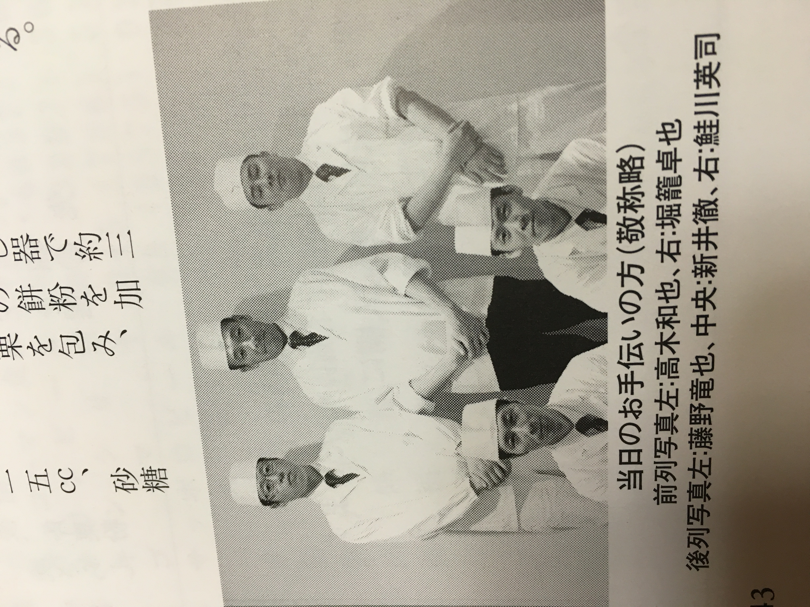

Pofile

- 名前
- 堀籠 卓也
- 生年月日
- 1992年5月30日(29歳)
- 電話番号
- 090-3575-7654
- 出身地
- 神奈川県厚木市
私は以前「ホテル雅叙園東京」で懐石料理屋の板前として７年働いていました。
７年間他の世界に触れる事なく過ごしていました。
しかし、日々の仕事や生活で様々なインターネットサービスを利用していると、便利で安心安全なサービスのおかげで今の暮らしがあると実感しました。
エンジニアという職業はこれからの世界をリードし、人々の生活をより豊かにする。そんな職業だと感じ、利用するだけでは無く提供する側に回りたいと思った事がエンジニアを目指すきっかけとなりました。
今は独学で勉強していますが、エンジニアとして働きスキルを身につけ、ITに精通した人だけではなく誰もが簡単に使えて便利なサービス作りをするのが目標です。
よろしくお願い致します。
Previous Works
-
日本料理全国大会出展
上野で毎年行われる全国大会に出店した時の写真です。
出展の二ヶ月ほど前から休みの日や、就業終わりの時間を使って献立作成、土台のイメージ、試作などを繰り返して完成させます。 -
日本漆器協同組合会長賞
上記の大会で入賞しました。
準備期間は大変な事ばかりでしたが、賞を取った時にはいい思い出になっていました。 -

プロに向けた講習会助手
日本料理研究会という会が主催の板前さんに向けた講習会の助手をした時の写真です。
普段働いている時には経験できない事だらけだったので貴重な経験になりました。 -
本マグロ解体ショー
居酒屋でバイトしていた時にお店の前でマグロの解体ショーをやった時の写真です。
外国の方や常連さんなど沢山の方に見られながらの解体だったので緊張しましたが、楽しくできました。 -
秋の御献立①
10月の前菜です。
手前には卵黄でみかんを模したものがあり、真ん中には素麺ですすきを模したものがあります。 -
秋の御献立②
11月の前菜です。
銀杏でどんぐりを、百合根で柿を、クワイで銀杏をそれぞれ表現した季節感のある前菜です。 -
春の御献立
4月の前菜です。
奥のガラスのツボに入っているものは桜花羹(おうかかん)と言って桜の花びらを模した白いものは百合根を一枚一枚花びら状に剥いています。
Studyings
-
タスク管理ができるアプリです。

-
ブロック崩しのアプリです。
カーソルの左右で動かします。
-
タイピングゲームのアプリです。

-
チャット風のアプリです。
一人で二役書き込めます。
-
クイズゲームのアプリです。
最後に正解数も出ます。
-
js,cssを用いたアニメーションです。
Enterを押すと車が走ります。
News
- 2009年3月
- 厚木市立厚木中学校卒業
- 2011年6月
- 普通自動車免許 取得
- 2012年3月
- 食品衛生管理責任者免許 取得
- 2013年4月
- 相模原調理師専門学校 入学
- 2013年10月
- ふぐ包丁師 取得
- 2014年3月
- 調理師免許 取得
- 2014年3月
- 相模原調理師専門学校卒業
- 2014年4月
- ホテル雅叙園東京 入社
- 2019年10月
- 日本漆器協同組合連合会会長賞 受賞
- 2021年5月
- ホテル雅叙園東京 退社